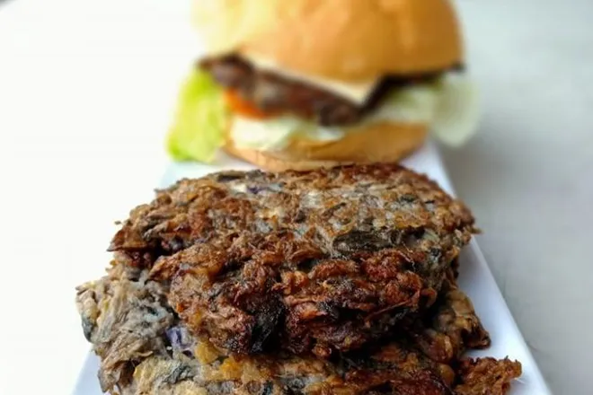

Puso Ng Saging | Burger

Description
This is another version of Pinoy vegetable patties. Puso ng saging is one of the best tasting, rich in fiber veggie that not everyone is aware of. In this recipe, we will show you how easy it is to prepare and get healthy while eating these patties!
Ingredients
- 1 piece puso ng saging
- 4 cloves of garlic
- 1 piece small red onion0
- black pepper
- 1 cup bread crumbs
- 1 egg
- salt
- cooking oil for frying
Steps
- If you can't find puso ng saging from the market, you may need to prepare this yourself. Remove the mature parts of the puso and cut it into 4 parts. Wash and put them into a pot and boil until soft. Remove from heat and let it cool.
- Once cooled, chop them into tiny bits. Squeeze and strain the chopped banana blossom to remove excess water and sap.
- Mix in garlic, onion, bread crumbs, and one large egg. Mix until fully incorporated.
- Season with ground black pepper and salt. Mix well.
- Get about 1/4 cup of the mixture and shape into a ball using your hands. Carefully flatten it into a patty shape.
- Heat pan with oil and fry the patties until golden brown. Drain excess oil.
- Serve with either hot rice or burger bun with tomatoes, lettuce, and mayo!